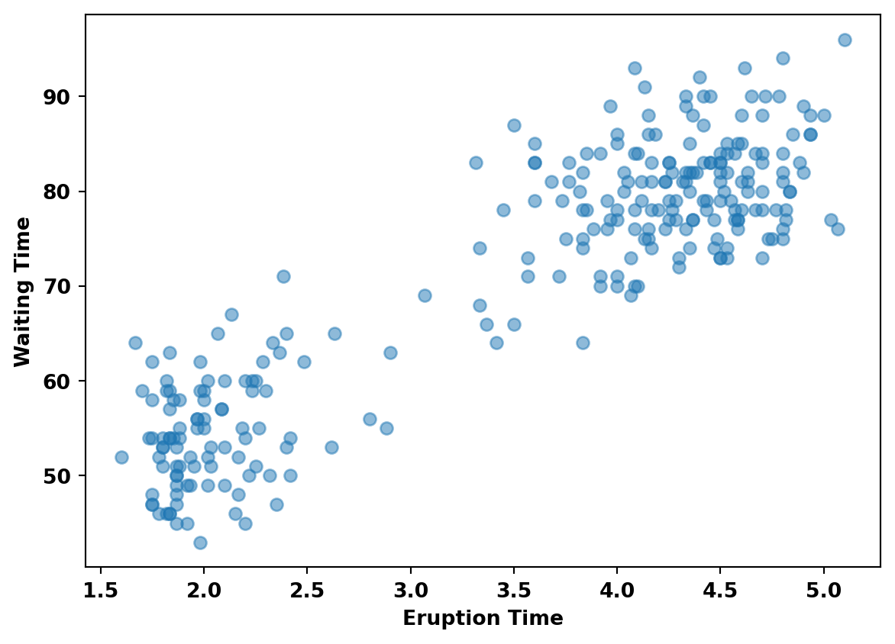
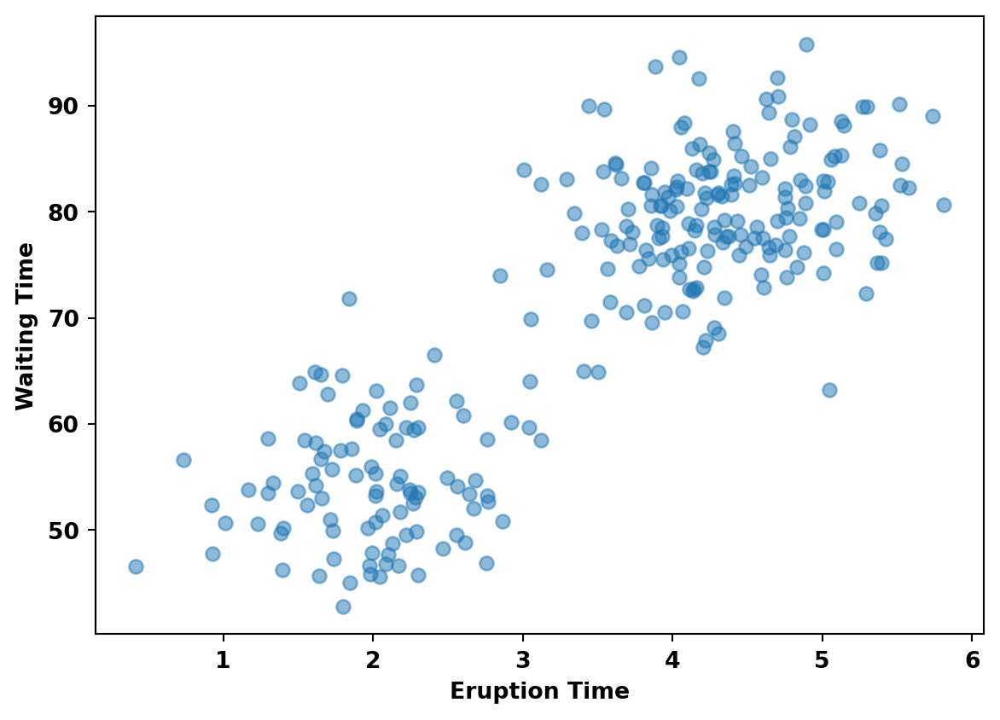

# pip install statsmodels
import numpy as np
import pandas as pd
import matplotlib.pyplot as plt
import statsmodels.api as smGarbage(Noise) in Garbage Out

What we are going to do is add guassian noise itertatively to a dataset and then pass the new noisy dataset to a pretrained machine linear model and track the ability of the model to learn the target as noise increases.
Read this brief article on garbage in garbage out and this brief article on guassian noise.
Answer the questions below as they relate to model output and the articles.
# This is the dataset we will be using: classic eruption times for old faithful.
# Take a look at the documentation
# here: https://www.rdocumentation.org/packages/datasets/versions/3.6.2/topics/faithful
# This is our data source
url="https://gist.githubusercontent.com/curran/4b59d1046d9e66f2787780ad51a1cd87/raw/9ec906b78a98cf300947a37b56cfe70d01183200/data.tsv"
# Reading in the data, and use the "tab" as a separator so the data will be loaded
# in correctly. pd stands for pandas and "pd.read_csv" is the function we are
# using to read in the data from the url.
old_faith = pd.read_csv(url, sep='\t')Let’s take a quick look at a plot to get an idea of the distribution of the data.
plt.scatter(old_faith.eruptions, old_faith.waiting, alpha=0.5)
plt.xlabel("Eruption Time")
plt.ylabel("Waiting Time")
plt.show()
# Note the patterns that you see, (you'll need this for your submission) 
Next lets build a simple model to predict Eruption Length based on Waiting Time
lm = sm.OLS(old_faith['waiting'],old_faith['eruptions']).fit()
lm.summary()
#Using the R2 measure, how well does the model predict (scale of 0 to 1,
# where 1 is perfect, again needed for your submission)| Dep. Variable: | waiting | R-squared (uncentered): | 0.973 |
|---|---|---|---|
| Model: | OLS | Adj. R-squared (uncentered): | 0.973 |
| Method: | Least Squares | F-statistic: | 9621. |
| Date: | Tue, 03 Oct 2023 | Prob (F-statistic): | 9.97e-214 |
| Time: | 10:27:10 | Log-Likelihood: | -1060.7 |
| No. Observations: | 272 | AIC: | 2123. |
| Df Residuals: | 271 | BIC: | 2127. |
| Df Model: | 1 | ||
| Covariance Type: | nonrobust |
| coef | std err | t | P>|t| | [0.025 | 0.975] | |
|---|---|---|---|---|---|---|
| eruptions | 19.4019 | 0.198 | 98.086 | 0.000 | 19.013 | 19.791 |
| Omnibus: | 31.065 | Durbin-Watson: | 2.646 |
|---|---|---|---|
| Prob(Omnibus): | 0.000 | Jarque-Bera (JB): | 10.019 |
| Skew: | 0.148 | Prob(JB): | 0.00667 |
| Kurtosis: | 2.108 | Cond. No. | 1.00 |
Notes:
[1] R² is computed without centering (uncentered) since the model does not contain a constant.
[2] Standard Errors assume that the covariance matrix of the errors is correctly specified.
Now what we are going to do is add “noise” to the dataset and then rerun the model and see what happens.
# mu= mean and sigma =standard deviation
mu, sigma = 0, .5
# creating a noise with the same dimension as the dataset (2,2)
noise = np.random.normal(mu, sigma, [272,2])
print(noise[0:5])[[-0.40372322 -0.34055581]
[-0.26345689 0.48807963]
[ 0.18813792 1.02199346]
[ 0.57280116 0.46845579]
[-0.06641393 -0.58144307]]Really a small change, let’s see what happens to the model quality
# Here we are adding the noise to the dataset
old_faith_1=old_faith + noise
#Create a new model
lm_1 = sm.OLS(old_faith_1['waiting'],old_faith_1['eruptions']).fit()
#Checking the R2 number
lm_1.summary()| Dep. Variable: | waiting | R-squared (uncentered): | 0.955 |
|---|---|---|---|
| Model: | OLS | Adj. R-squared (uncentered): | 0.955 |
| Method: | Least Squares | F-statistic: | 5816. |
| Date: | Tue, 03 Oct 2023 | Prob (F-statistic): | 3.80e-185 |
| Time: | 10:27:10 | Log-Likelihood: | -1126.8 |
| No. Observations: | 272 | AIC: | 2256. |
| Df Residuals: | 271 | BIC: | 2259. |
| Df Model: | 1 | ||
| Covariance Type: | nonrobust |
| coef | std err | t | P>|t| | [0.025 | 0.975] | |
|---|---|---|---|---|---|---|
| eruptions | 19.0093 | 0.249 | 76.260 | 0.000 | 18.519 | 19.500 |
| Omnibus: | 4.315 | Durbin-Watson: | 2.253 |
|---|---|---|---|
| Prob(Omnibus): | 0.116 | Jarque-Bera (JB): | 3.358 |
| Skew: | 0.152 | Prob(JB): | 0.187 |
| Kurtosis: | 2.549 | Cond. No. | 1.00 |
Notes:
[1] R² is computed without centering (uncentered) since the model does not contain a constant.
[2] Standard Errors assume that the covariance matrix of the errors is correctly specified.
Now let’s take a look at that same scatter plot but with the new data
plt.scatter(old_faith_1.eruptions, old_faith_1.waiting, alpha=0.5)
plt.xlabel("Eruption Time")
plt.ylabel("Waiting Time")
plt.show()
Task 1: Slowly change the standard deviation (increases of .25) and see what happens with the R2 number, note the pace of change of the model.
Task 2: Adjust the mean but leave the standard dev low, note how this effects the model.
Questions for submission:
What patterns do you see in the data?
How well did the first model fit the data?
Explain the concept behind noise versus signal as it relates to example today on the old faithful dataset.
Define the term gaussian noise and explain the observations you noted